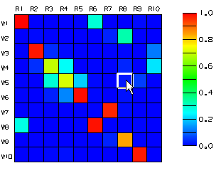

Plot the MAC matrix
Plot MAC (Correlation toolbar)
-
 in the R8W5 cell of the MAC matrix
in the R8W5 cell of the MAC matrix

Note
In the MAC matrix, the R values indicate the reference (test) mode shapes and the W values indicate the work (analysis) mode shapes. The R8W5 cell stores the MAC value for the 8th test mode shape and the 5th analysis mode shape. This value is displayed in the bottom right corner of the Correlation Modal Assurance Criteria (MAC) Results dialog box.
Inspect MAC values for other test and analysis mode pairs.
-
Close